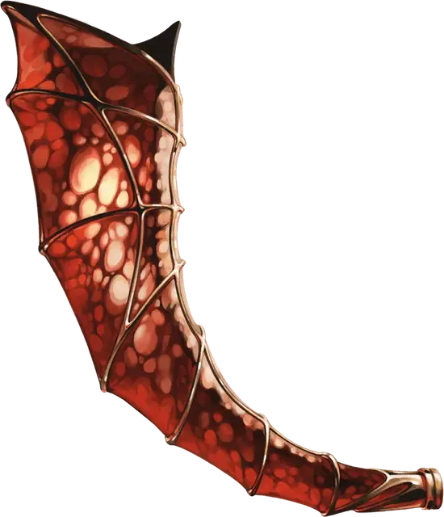

Рог Манящей Смерти
Horn of Beckoning Death
Чудесный предмет, легендарный (требуется настройка Волшебником, Колдуном или Чародеем)

Рекомендованная стоимость от 50 001 зм
Выглядящее как рог небольшого дракона, это магическое устройство начинает светиться изнутри адским светом, если взять его в руки. Держа этот рог, действием вы можете вызвать магию некромантии, известную как Манящая Смерть.
Манящая Смерть появляется в начале вашего следующего хода в виде сферического облака кроваво-красного дыма радиусом 30 футов с центром на роге. Сфера не передвигается вместе с рогом. В начале каждого вашего хода радиус сферы увеличивается на 30 футов. Облако исчезает через 10 минут или когда ваша концентрация на поддержании эффекта завершается. Любое существо (включая вас) с 9 хитами или меньше, заканчивающее свой ход в облаке, убивается Манящей Смертью. Гуманоиды, убитые Манящей Смертью, немедленно обращаются в зомби [zombie], повинующихся создателю рога, личу Сзассу Тэму.
После использования этого свойства оно не может быть вновь использовано в течение 1 года.